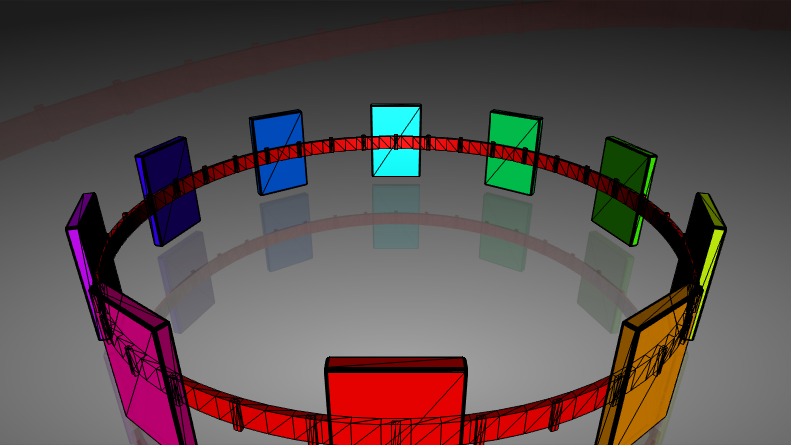
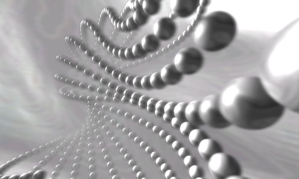
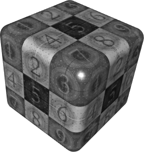
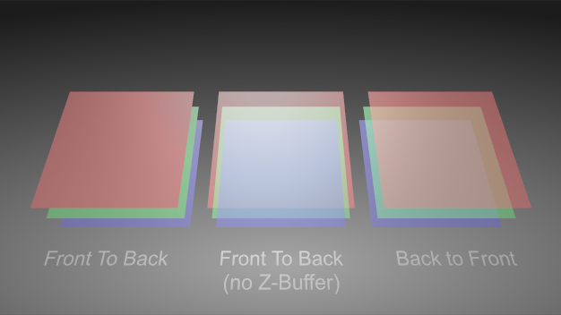

The world of Realtime 3D Graphics is a daunting one both for beginners and 3D professionals. It has its unique rules and processes that at first seem to be the same as in 3D movie production or still rendering, but the differences are vast and affect everything from planning a presentation up to the final rendering result.
While this document does not contain any Ventuz-specific information and cannot deal with 3D rendering in all its complexity, knowledge of the inner workings of a modern graphics card will help to understand what the possibilities and limitations of a 3D realtime presentation are. For the sake of conciseness, various oversimplifications have been made and while some statements may even seem utterly wrong to the experienced user, ignoring exceptions to the rule will help new users to not be overburdened by a flood of information. The interested reader is referred to classic books such as "Computer Graphics - Principle and Practice" by Foley, van Damn et al. or "Realtime Rendering" by Möller and Haines.
All modern graphics cards basically create 3D images in the same fashion. Objects are specified by describing their surfaces using points in 3D space and triangles connecting those points. There is no volume, weight or other physical property to an object in 3D graphics. Objects may appear solid but in the end it is all just surfaces. Since everything is constructed out of triangles, there also simply is no "smooth" surface. However, a sphere can appear to be smooth if enough tiny triangles are used such that the user cannot perceive where one triangle starts and the next ends.

In 3D graphics - especially in realtime 3D graphics -, everything is about perception. What an object appears to be is more important than what it really is. Plus, in the end, everything boils down to a bunch of mathematics anyway.
The purpose of a graphics card is to create a 2D image that can be shown on a screen, and that of course as fast as possible. Over the years, two major techniques have been established: Raytracing and Rasterization. The former is primarily used in movie production or anywhere else where the time to create an image is less important than the quality of it. The name Raytracing comes from the process of casting rays through the 3D scene in order to calculate what the user sees at a given pixel from his point of view. In its simplest form, such a viewing ray may bounce between various objects until it hits a lightsource, at which point the algorithms can calculate what color the pixel that cast the ray should be. While this can be quite computationally intense work, raytracing can easily deal with shadows, reflections, transparencies and many other real world phenomena. Although many optimizations have been made over the years and processor power has increased tremendously, raytracing is still too performance intense to create 60 or more frames per second from a scene that constantly changes.
While Raytracing tries to mimic real world physics, Rasterization takes the completely opposite approach: It projects triangles to the screen instead of searching through the 3D space. The vertices of a triangle run through a series of matrices to simulate the effects of a camera such as perspective shortening, thus transforming them from 3D space to a 2D space.
The main part of this projection process is split into three matrices:
Once the 2D vertex positions have been calculated, the triangle can be converted to pixels by connecting the vertices and then filling the interior of the triangle. This step of going from a 2D continuous space to pixels is what gives the whole process the name Rasterization as the 2D triangle is discretized to the 2D raster of pixels.
Rasterization will generate a number of Fragments which can be thought of as potential pixel changes. A fragment contains the 2D coordinates of the pixel it belongs to as well as the color of the triangle at that point. Before assigning that color to the pixel, the fragment has to run through a number of tests which can each reject the fragment and thus prevent the triangle from changing that particular pixel. This can be used to mask off certain parts of the screen or prevent overdraw to simulate occlusion effects as will be described later.
Each triangle is processed independently of all other triangles in a scene. This reduces the required processing power per triangle to an almost trivial amount but also ignores all global effects.
This process is very efficient and today graphics cards are capable of doing this millions or even more times each second. The downside is that any relation to the physical world is lost and has to be created artificially. Or to be more precise, the perception of reality has to be created. During the evolution of Rasterization, more and more complex phenomena have been adapted to somehow fit into the world of Rasterization. But they have been integrated as more of an afterthought to the pre-existing technique.
One of the earliest problems of Rasterization was that of occlusion. When viewing two objects in space, one will occlude the other if it is in front from the viewers perspective. This is one of the most basic and most important principles on how humans grasp the spatial relationship between objects.

As Rasterization works on a per triangle basis, the spatial relationship is completely ignored by the Rasterization itself. If two triangle occupy the same 2D pixel, the one that is drawn later will overdraw the result of the other. As a result, correct occlusion is dependent on the rendering order. If the object farther away from the viewer is drawn first, everything ends up correct, if it is drawn last, it will overdraw objects that are before it. Sorting all triangles based on their depth is performance intense, therefore a so called Depth Buffer was introduced and now is standard everywhere. The Depth Buffer stores an additional value for each pixel, specifying the depth (from the viewer's perspective) of the pixel that has last been rendered to this pixel (this is called the Z-Value). Before changing the color of a pixel, Rasterization checks the depth value of the pixel as calculated as part of the triangle against the value already stored in the Depth Buffer and skips the pixel if it is farther away than the memorized value. This is easy to compute, creates correct occlusion results and the rendering order of triangles becomes irrelevant again.
It however also creates a complete new type of problem: Z-fighting. Since the Z-Buffer has only limited floating precision (usually 24 bits), the viewing field of a camera has to be artificially restricted to have a finite interval that can be mapped to a depth-value between zero and one. This is done by specifying the near and far plane which restrict the viewing field to a so called view frustum. All triangles closer than the near plane and farther than the far plane will not be rendered. The obvious solution is to choose a near plane very close to the camera and a far plane very, very far away. This however increases the likeliness of vertices at different Z coordinates to be mapped to the same depth value (if the precision of the Z-buffer does not suffice to distinguish between the two values). This can cause visual artifacts where parts of an object shine through another more or less randomly. This is called Z-fighting, where the decision which triangle occupies the pixel changes based on the camera position (and not their Z position) as various rounding errors kick in. For this reason, a compromise has to be made between a depth range that does not omit usually visible or important objects but also does not cause visual artifacts.
Casting shadows, which is basically the same problem as occlusion but from the view point of the light source, is to this day still a hard problem in Rasterization. While there are dozens if not even hundreds of algorithms to add shadows to the Rasterization process, the amount of computation to create a visually pleasing shadow is immense. Every object, even the ones that are not visible from the cameras point of view, can potentially cast a shadow.
To make matters worse, what we know as shadows in the real world is not a simple "light is blocked or not blocked" question but the result of light bouncing of surfaces multiple times, reaching areas which are not directly visible from the light source. This is what Raytracing tries to simulate and what makes it so complex. It is also a far stretch from splatting triangles to the screen the way Rasterization does it.
Engineers have thought of several ways to solve these issues. One of them is using an Ambient Light that applies a certain Color to every Triangle's face no matter its position, rotation or the light sources. This way, when a source's light does not reach a triangle, it is not completely black, but still has a small amount of brightness simulating the indirect rays reflected from other objects. Another newer approach is using Global Illumination algorithms.
When Rasterization was first developed, lighting did not really play any role. At that time, computer screens only had two colors and actually seeing a 3D line on a display was revolutionary. Even when processing power improved, shading a triangle meant assuming a light source is an infinite small point and computing a pixel color from that information was only done for the vertices of a triangle and then interpolated over its face (per-vertex-lighting). Today it is finally possible to do this computing per pixel on the screen (per-pixel-lighting) so that the lighting is computed as precisely as needed. Still it must be taken into account that this is very performance intense and sometimes one could still be better off using per-vertex-lighting.
Lighting computation in Ventuz is done per pixel, not per vertex. It requires each vertex to have a so called normal, a vector that is orthogonal on the surface and of unit length. Most 3D modeling program calculate these automatically during creation of an object. Instead of calculating the lighting value per vertex and then interpolating it, the normals are interpolated and then the lighting model is applied to each pixel filled by the triangle.
The other information required is the position and type of one or more light sources. The most common light sources are point lights (the light emits from infinite small "lamps" at a specific position in 3D space) and directional lights (without a position but a constant direction as from a far away light source like the sun).
The graphics card uses some simple vector-math to change the brightness and color based on the relation of the vector from light to object, the normal and the vector from the viewer to the object.
There are different approaches to calculating the color of a pixel depending on this information, each one having different kinds of adjustable parameters. The most common ones are Gouraud and Phong which have been used in the industry for many years. Rather new but not less common today is Physically Based Rendering. While the Gouraud and Phong Lighting Models have parameters that would never be used to describe materials in the real world, PBR has the approach to do exactly this to make the work of an artist a lot easier - if he wants to create a stone surface he just has to look up the physical values of it and type it in. No feeling of faking everything anymore.
Phong uses 4 common terms that are combined to the final color:
All terms combined create a very characteristic and somewhat cheap looking plastic look and feel. Therefore most objects are usually textured to increase their realism.
Gouraud uses a similar approach but does not regard specular highlights. As a consequence all parameters regarding the specularity are omitted in this lighting model.
PBR uses a more realistic approach to render materials. Every engine uses slightly different Algorithms and so the parameters may also differ from engine to engine. This is because this model is in a very early stage of development.
Ventuz uses a very similar approach to PBR. Although there are a lot of differences in the behavior and inputs to a Ventuz Material, in the end most real life materials can be build with the help of the Ventuz Engine.
Commonly a physical material is described using 4 Parameters:
Often parameters like an Ambient or Emissive Color are used as well since they can be added to this model easily and offer very easy ways to directly affect the rendering of a material.
One development which had a profound impact on 3D graphics and realtime rendering in particular was the introduction of Textures. A texture is a 2D image which is mapped to the object's surface and used during Rasterization as an input property for one of the lighting model's parameters to generate the final color of a fragment. Instead of modeling a wall of bricks and assigning it a proper color, one can use a simple rectangle with an image of a wall of bricks. The first and still dominant application of textures is to give a surface the look of a certain material (leather, water, clouds, ...), reducing the number of actual triangles required to achieve the same effect. For example the stitches on a car seat do not have to be modeled but can be "overlayed".

The basic principle of a texture is very simple. Each vertex of a triangle is assigned a new set of 2D coordinates (called U/V to distinguish them from X/Y/Z) to describe which part of the texture should be mapped to the triangle. Usually, the upper left corner of an image is assigned 0/0 and the lower right 1/1, but it is also common to use mapping matrices to modify (scale, rotate and translate) the original U/V-coordinates during Rasterization. It is the responsibility of the designer to create the original model to assign proper U/V-coordinates, same as he decides the position of vertices in 3D space.
Over the years, various other useful applications of textures have been developed. The most crucial ones for realtime rendering being Shadow/Highlight Baking, Ambient Occlusion and Normal Maps.
Since the pixels in a texture can have any color, the designer is not limited to using them to indicate a material. He can also brighten or darken individual pixels to put highlights or shadows on to the surface. As long as an object does not move relative to the light-source or deform, the lighting information will be plausible. The great benefit of this is not only that the lighting computation does not have to be computed during rendering but that a more complex approach (such as raytracing) can be used to pre-compute high quality shadows that would not be possible at all with Rasterization. Another use for this that greatly increases the visual quality is baking so called Ambient Occlusion. This is where the shadows that are caused by the object shadowing itself, usually where regardless of the light source, there will be less light (such as cracks, indentations and joins) are baked into the model as a texture. Lastly Normal Maps can be used to change the normals applied to the vertices of a geometry pixel wise. The resulting normals will then be used by lighting model instead of the interpolated ones. This way it is possible to make details on the surface (like the stitches on a car seat) look even more realistic since the Lighting can still be affected by the structure of the detail.
A similar idea is used for user interface elements. Why model a button, set proper light sources, assign correct materials when an image of a button can be created in Photoshop and then mapped to a rectangle? Making the button glow takes two clicks in Photoshop where it takes quite sophisticated techniques to integrate it into the Rasterization process. If it looks right and good, why bother with complex techniques?
Going further, artists even use textures to "bake geometry". If an object is far away enough, the difference between a still image mapped to a rectangle and a rendered object will be negligible. This is often used to render trees, clouds, grass or similar objects which are part of the background but would take thousands of triangles to model.
Nowadays, the use of textures is so common that scenes are often limited by the texture memory available on the graphics card rather than the number of triangles that can be rendered each frame.
At one point or another, every scene will contain some (partially-)transparent objects. Whether it be the front window of a sports car or the surface of a pool of water, transparency is an important part of the physical world... and again, Rasterization is not really capable of handling it. Same as with visibility, transparency is the effect of light bouncing of a surface and traveling through a medium until it reaches the viewer. This interaction of multiple objects does not fit to the per-triangle fashion of processing triangles as Rasterization uses it.
What was introduced to address this problem is a way to influence how the contribution of multiple fragments to the same pixel is mixed. The alpha value of a pixel in a texture or the color of a material describes the opacity of the object, zero being complete transparent and 1 being completely opaque. When a triangle is drawn to a pixel, the graphics card computes a weighted sum of the existing and new color value based on their alpha values and a blending function. The most common use is to increase the contribution of the new color the larger its alpha value is, completely overwriting the existing color if alpha is one.
There is however one problem with this approach: The rendering order. Imagine three sheets of glass, each in a different color. Let's say they are, from front to back, red, green and blue. Each has an alpha value of 0.5.

In the left configuration, the red glass doesn't look transparent at all. Why is that so? The render order of the objects is red then green then blue. When red is rendered, the Z-values in the depth buffer are set and no fragment from another triangle with a farther away Z-value will be rendered at all. So there is no chance to blend green and blue because their fragments are discarded before blending.
In the center configuration, depth testing has been artificially turned off. First red is rendered with nothing to blend it with since it is the first thing rendered. Then green is rendered and blended and blue is rendered and blended. Each time the new object will take 50% of itself and 50% from the already rendered objects, so at the time blue is rendered, only 25% of red will be left.
In the right configuration, depth testing has been re-enabled but the rendering order has been changed to back to front: First blue then green then red. When red is rendered, it takes 50% of itself and 50% of the already rendered objects which creates the correct effect.
As opposed to occlusion testing, there is no simple way around having to sort the objects back to front. Note however that the amount of work can be reduced by first rendering all non-transparent objects in any order and afterwards rendering all transparent objects back to front.
Another classic effect is reflection. And yet again, it is based on light bouncing off a surface and requires interaction between different objects, therefore it is not part of standard rasterization. There are two main cases of reflections in use in realtime rendering: Environment reflection and mirror reflection.
Environment reflection describes effects where reflections of the surrounding environment can be seen on the surface of an object. For example, clouds in the lacquer of a car. For this type of reflection it is usually less important what exactly can be seen in the reflection as long as it roughly matches the surrounding. The most common way to achieve this effect is to render the surrounding into a texture (usually a cube map) and doing the texture mapping not based on the U/V-coordinates of the mesh but by computing a reflection vector. Basically the cube map encodes the color for each direction of a reflection vector and thus producing the reflection requires little computation during rendering.
Mirror reflection describes effects which mimic a perfect mirror. In general this is only possible for a planar surface, otherwise it would require raytracing. The idea to fake this effect is to render the scene twice, once mirrored along the reflection plane and once correctly. Think of a pool in a hotel. The hotel can be seen as expected everywhere except in the pool. In the pool, the hotel can be seen upside down.
The definition of realtime is pretty vague. For some "realtime raytracers", realtime means that 2-3 frames per second can be rendered. Most people however agree that realtime graphics require a minimum of 30 FPS (frames per second) to be acceptable and 60 FPS to have a good quality of animation. This of course puts tremendous stress on the graphics card as well as the computer in general. There are a number of different optimization strategies that are employed to achieve such high frame rates.
If you cannot see it, there is no need to render it. That is the motto of culling techniques which try to avoid having to render an object or triangle at all. For example, all triangles that are completely outside of the camera viewing area do not have to be rendered as they will not contribute to the final image. This technique is called Frustum Culling and is something that has to be done by the user or on the application level and therefore will not be further discussed here.
There is however a common culling technique that is directly supported by the graphics card: Back-face Culling. The idea is that all triangles belong to the part of an objects surface that faces away from the user will not have to be rendered if the object is solid (i.e. there are no holes in the surface). The reason for this is that if the object is solid, there will be some front-facing part of the surface in front of the back-facing triangles anyway.
The graphics card uses the order in which the three vertices of a triangle are specified to decide if a triangle is front- or back-facing. Based on the render options set by the application, either all clockwise or counterclockwise triangles will be dropped. In general, back-face culling simply just looks right. The only problems are one-sided objects (i.e. a rectangle that has no thickness) which will "disappear" when rotated so that they face away from the user. The other problem is when importing geometry from other programs.
A lot of 3D modeling programs use two-sided lighting which means they render triangles independent of their vertex orientation. If some triangles of an object are missing when importing them, make sure the triangles are oriented consistently and the culling render option in Ventuz matches that of the modeling program.
All work that does not necessarily have to be re-done every frame should be pre-calculated. For example, if the lighting situation does not change and the object does not change either, consider baking shadows into textures. If the relative ordering of transparent objects always stays the same, do not sort them every frame but build the presentation such that they are rendered in the correct order in the first place.
The easiest way for an artist to improve render performance is to reduce the complexity of a scene. The fewer triangles and objects and the smaller the textures used, the faster it all can be rendered. It is not uncommon to remodel objects specifically for the purpose of realtime rendering. Most of the time, only the outer shell of an object is seen, so the chips and cables inside a mobile phone can be removed without any visual difference. Even on the outer shell, triangles can be saved if the object is only viewed in the distance. If an object is never viewed from the back, remove the back as well.
As an example, have a look at a model of car used to render some advertisement and a model of the same car used for a console game. The number of triangles used can differ by a factor of a thousand or more.
Never expect a mesh that is modeled for another purpose to be suited for realtime rendering. For models created for raytracing or simulation work, assume that the number of triangles has to be reduced as well as the size and number of textures.
For use of textures, the number of textures is usually more crucial than the actual size of them. This goes up to a point where multiple independent textures are sometimes combined to one larger Texture Atlas to reduce the number of times the graphics card has to switch between different textures. However, reducing texture resolution can also optimize rendering times as less memory has to be managed and accessed. It can even improve the visual quality if the texture resolution is adjusted so that it matches the size the object as it appears in the rendered image.
This concludes this very brief introduction to realtime 3D rendering. There are a vast number of text books and papers out there on this topic for further reading. However, they pretty much all are written for developers and not artists. Since realtime rendering is such a demanding application when it comes to computer resources, the reader is encouraged to at least take a glimpse into the underlying programming techniques and algorithms to get the most out of his 3D presentation.